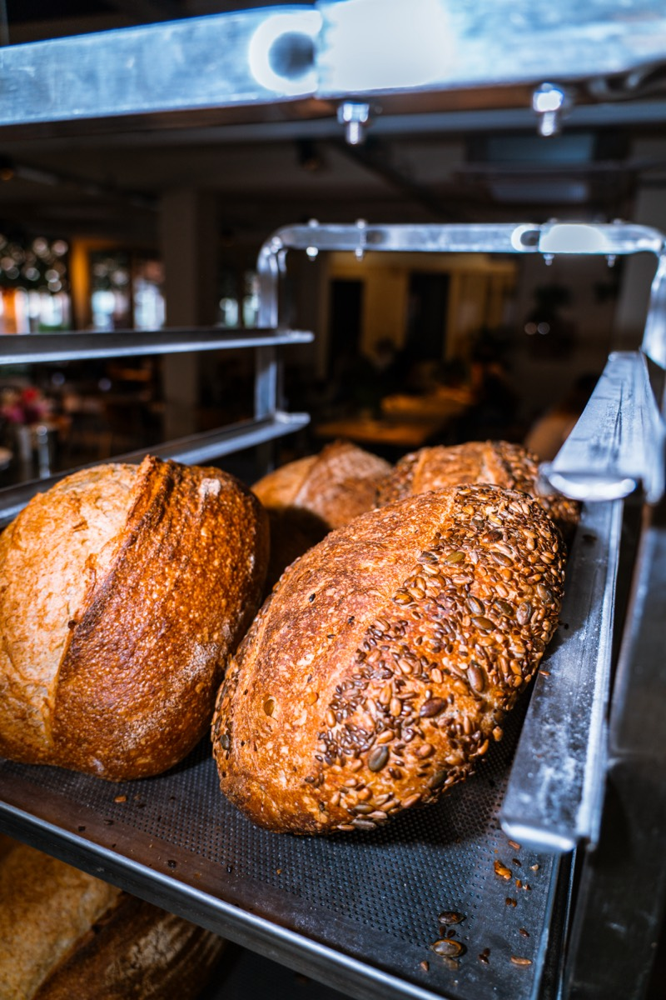
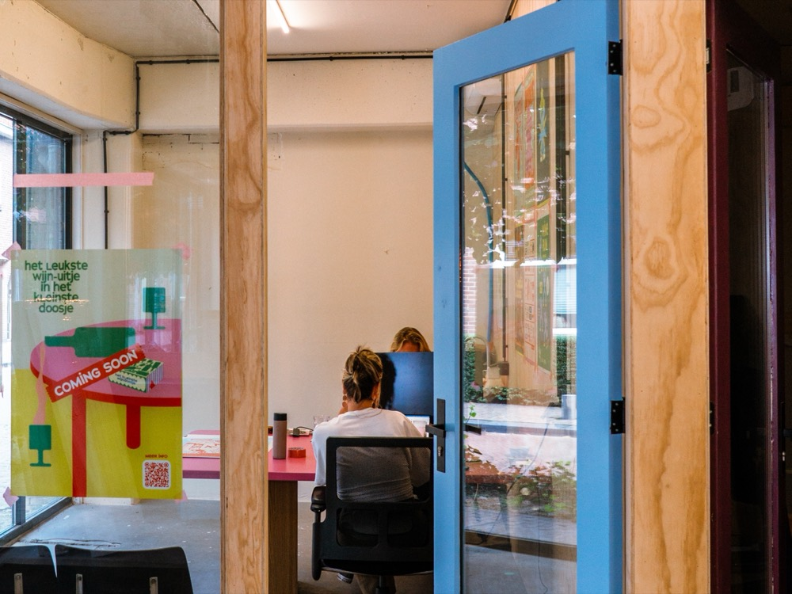
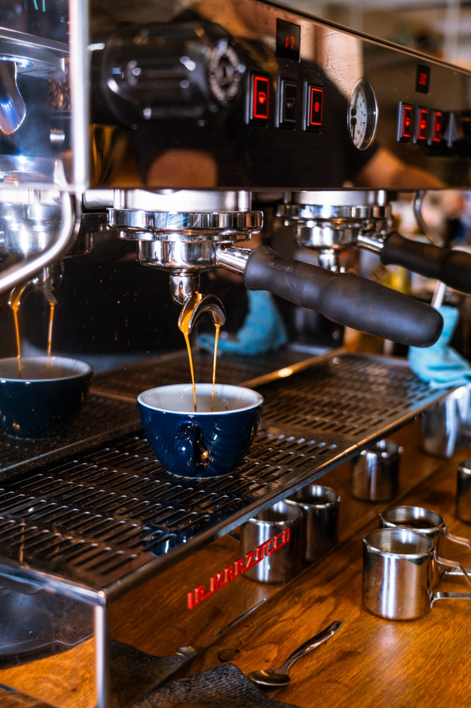
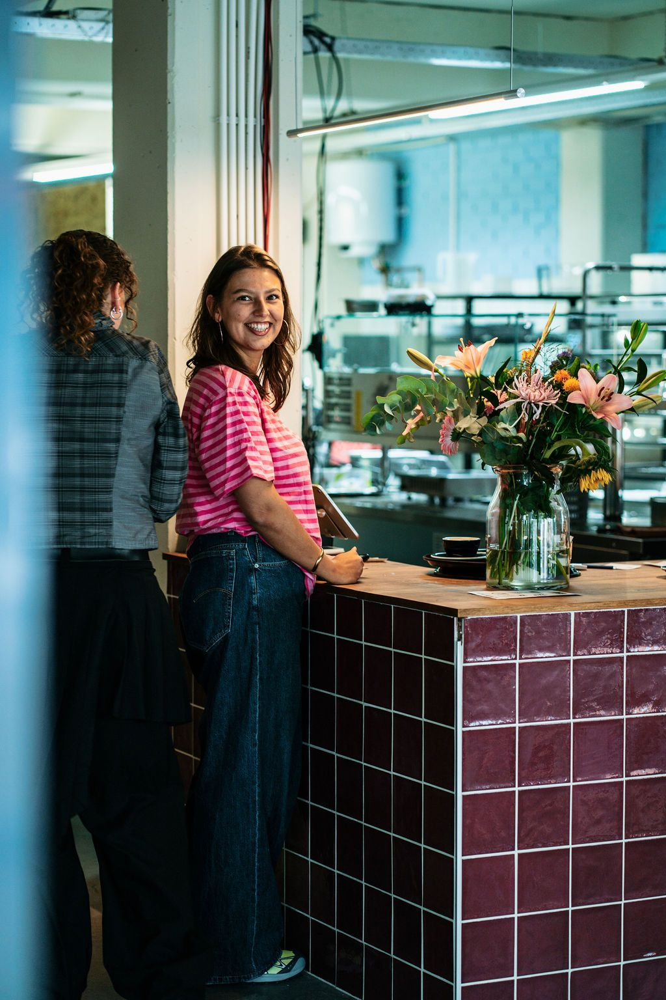
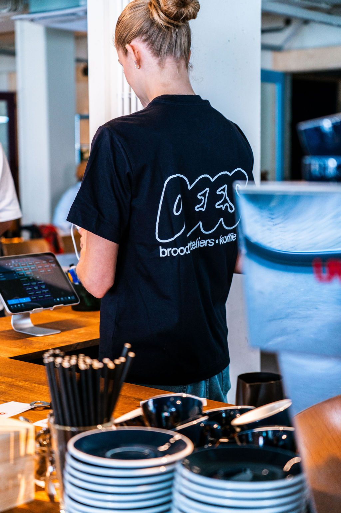
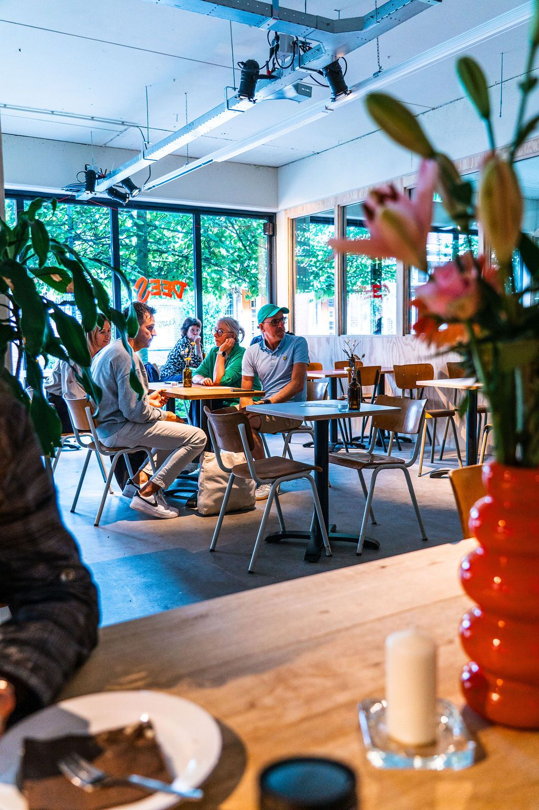

Ateliers
Neem een kijkje bij een van de makers in de ateliers bij Dees!
Klik hier om iedereen te leren kennen
Koffie
Pssst... Wist je al dat we bonen van Sprout gebruiken? Top koffie gewoon om de hoek uit Eindhoven!
Kom langsKorte Tuinstraat 20 & 22, Tilburg
KEN JE DEES?
Dees is een bakkerij en koffiebar met ateliers aan de Korte Tuinstraat, midden in het Dwaalgebied van Tilburg. Je komt bij ons voor vers desembrood, ontbijt, lunch en focaccia uit eigen bakkerij, en natuurlijk voor goede koffie. In onze ateliers werken creatieve makers, en je kunt bij ons een werkplek of de vergaderruimte huren.
Ma–vr 08:30–16:30 · za–zo 09:00–16:00


